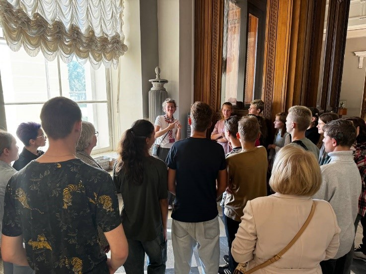

САНКТ-ПЕТЕРБУРГСКОЕ РЕГИОНАЛЬНОЕ ОТДЕЛЕНИЕ ОБЩЕРОССИЙСКОЙ ОБЩЕСТВЕННОЙ ОРГАНИЗАЦИИ ИНВАЛИДОВ «ВСЕРОССИЙСКОЕ ОБЩЕСТВО ГЛУХИХ»
Цикл социально-культурных мероприятий для молодежи с нарушением слуха Санкт-Петербурга, который включает в себя пять основных блоков (этапов) мероприятий:
1. Организация волонтерского корпуса для помощи в организации и проведении Всероссийского конкурса концертных программ;
2. Мероприятия в рамках проекта «PRO Люди» (встреча с успешными глухими людьми);
3. Экскурсии и интеллектуальные викторины в Государственном Русском музее;
4. Форум профессионального самоопределения «День поиска себя»;
5. Форум актива молодежного движения Санкт-Петербурга «Центр роста».
Все мероприятия направлены на развитие и включение молодежи в социально-культурную деятельность, добровольческую и общественно-полезную деятельность, развитие гражданской и патриотической активности, помощи в самоопределении своего профессионального вектора развития, формирование и совершенствование молодежного актива среди неслышащей молодежи, выявление лучших практик работы с молодежью из числа жителей Санкт-Петербурга, имеющих инвалидность, совершенствование системы работы по направлению молодежной политики в общественных организациях города Санкт-Петербурга.
Количество благополучателей: 3000 человек.
Количество волонтеров: 72 человек.